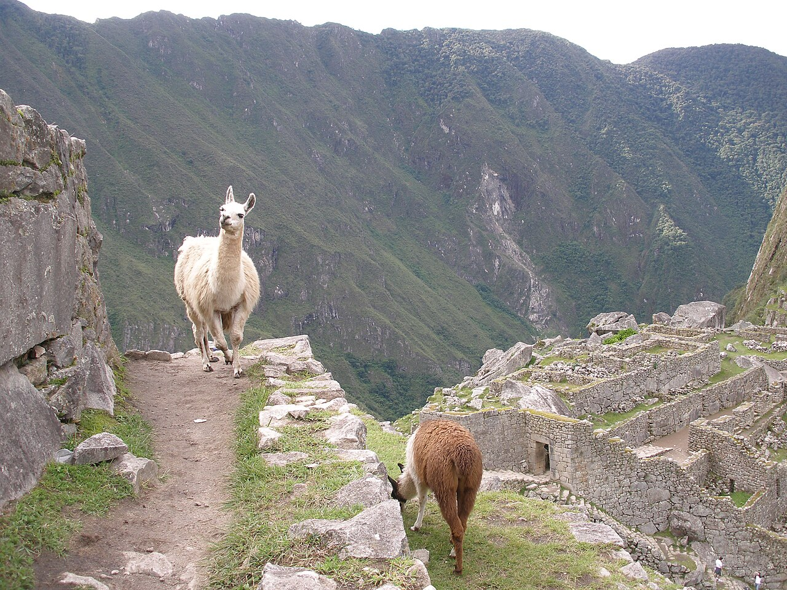
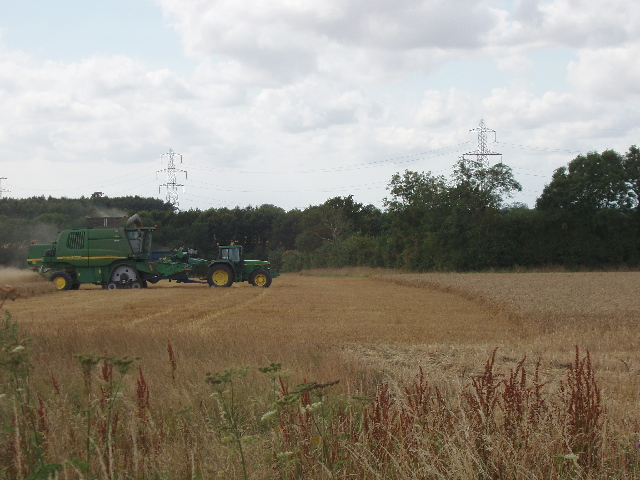
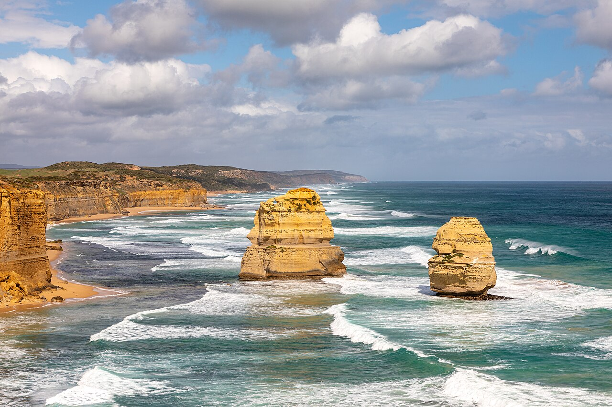
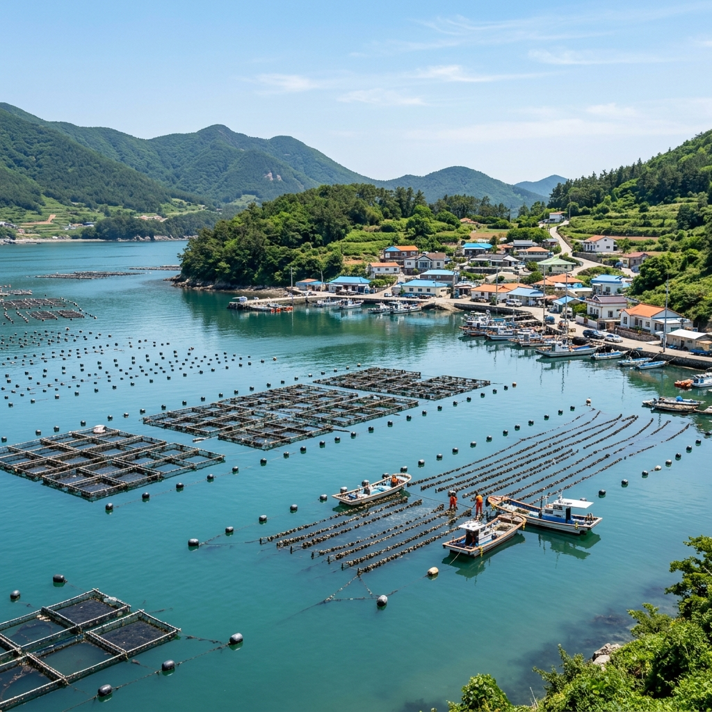
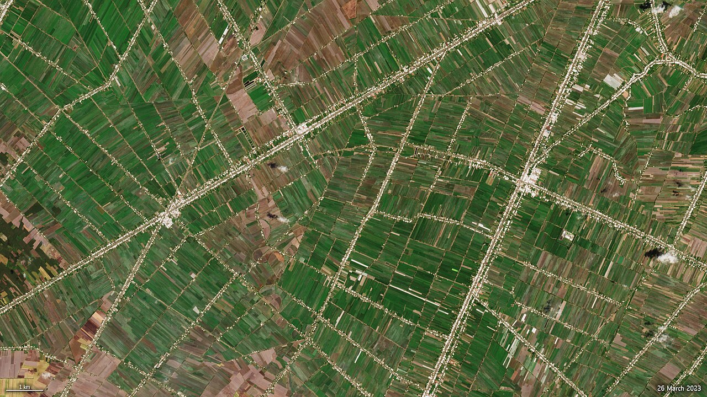
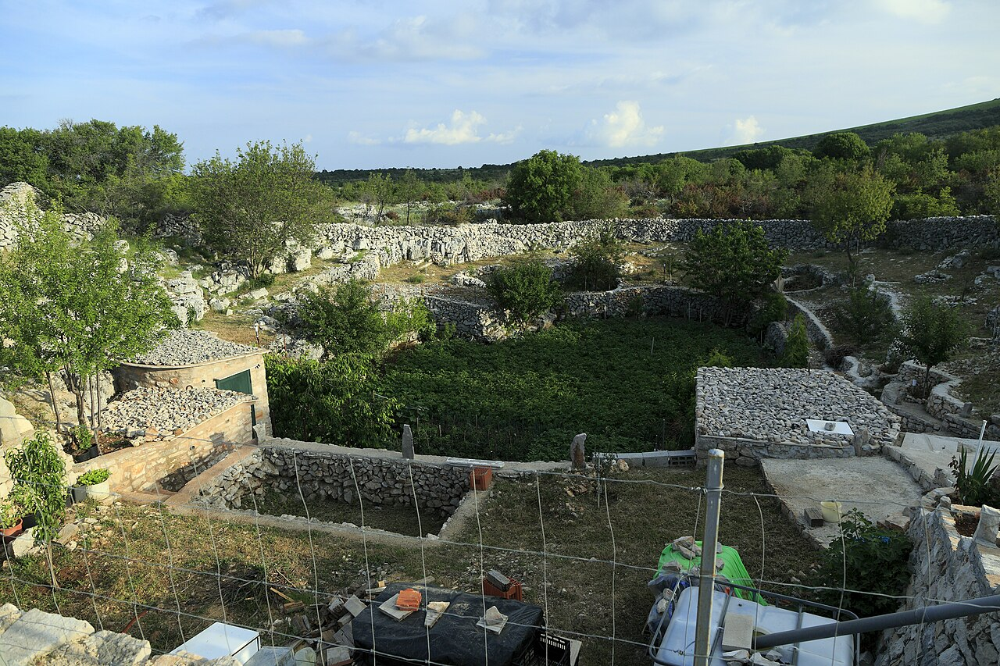
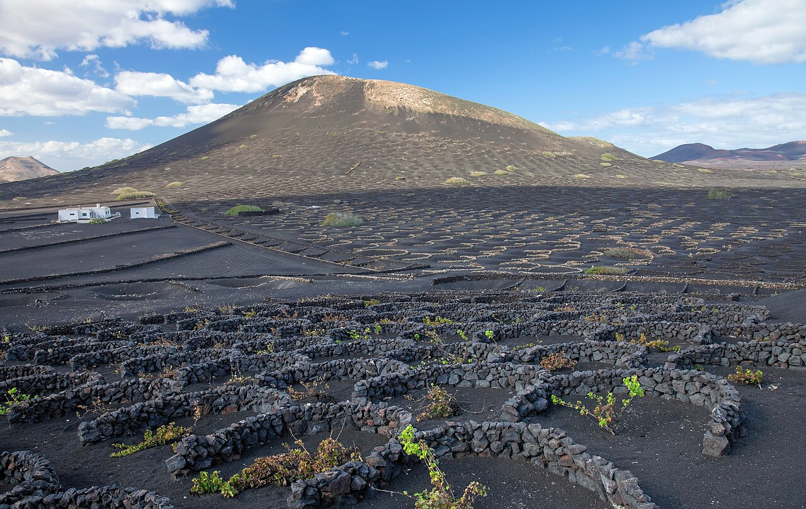
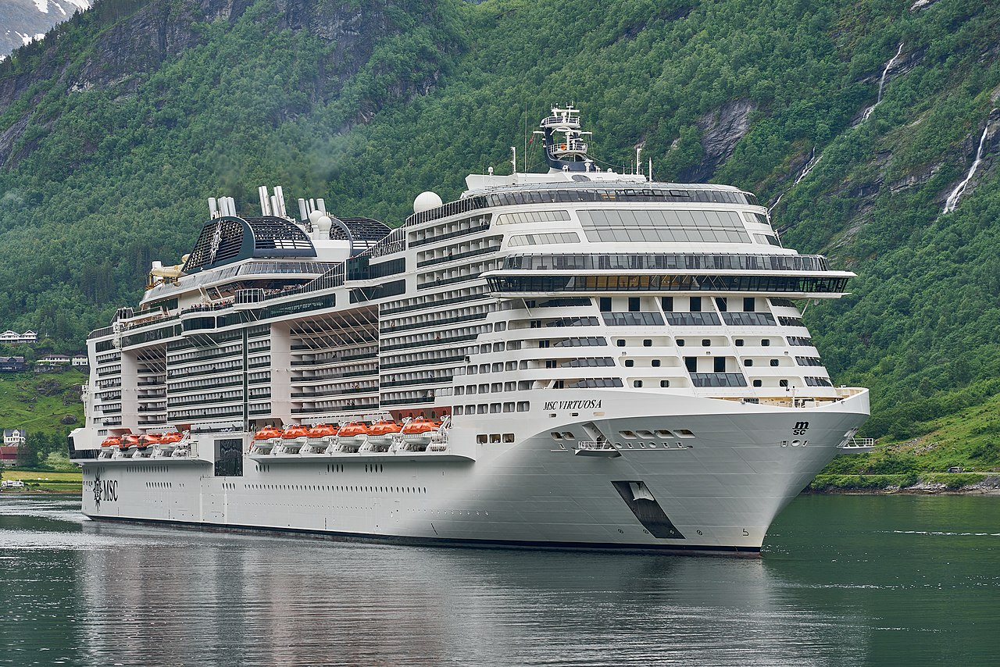

"연중 무더운 날씨와 울창한 밀림, 비와 더위를 이겨내는 삶의 지혜"
📊 열대 우림 기후(Af) 그래프
📊 열대 몬순 기후(Am) 그래프
📊 사바나 기후(Aw) 그래프

🛖 지면에서 띄워 지은 전통 고상 가옥

🍌 대규모 상업 작물을 재배하는 플랜테이션

🦁 동물이 노니는 광활한 사바나 초원
📌 기후 특징
- 기온 연중 고온 ➡️ 연교차보다 일교차가 큼
- 강수 및 식생 적도 수렴대 영향으로 강수량 많음 ➡️ 울창한 밀림(열대 우림) 또는 사바나 초원 형성
- 주요 지역 적도 주변 및 저위도 지역 (아마존 분지, 동남아시아 등)
🏡 주민 생활 모습(의·식·주)
- 의(衣)생활 열기 극복 ➡️ 통풍이 잘되는 얇고 가벼운 옷 착용
-
식(食)생활
• 이동식 화전 농업: 숲에 불을 질러 만든 밭에서 카사바, 얌 등 재배
• 플랜테이션: 선진국의 자본·기술 + 원주민의 노동력 결합 ➡️ 바나나, 카카오, 커피 등 상업 작물 재배 -
주(住)생활
• 구조 특징: 습기와 열기, 해충 방지 ➡️ 바닥을 높인 고상 가옥
• 지붕 경사: 잦은 강수(스콜) 극복 ➡️ 가파른 경사 지붕 설계
"메마른 모래 대지와 끝없는 초원, 물을 찾아 적응해가는 생명의 터전"
📊 사막 기후(BW) 그래프
📊 스텝 기후(BS) 그래프

🏡 평평한 지붕과 두꺼운 벽을 지닌 흙벽돌 가옥

🌴 사막 속 젖줄인 오아시스 농업 경관

⛺ 초원 지대 유목민의 전통 가옥 게르
📌 기후 특징
- 강수량 부족 연 강수량 500mm 미만 ➡️ 강수량보다 증발량이 많음
- 기후 구분 연 강수량 250mm 미만인 사막 기후 + 250~500mm인 스텝 기후 구분
- 주요 지역 중위도 고압대 주변 및 대륙 내부 (사하라 사막, 중앙아시아 초원 등)
🏡 주민 생활 모습(의·식·주)
- 의(衣)생활 강한 햇빛, 모래바람, 일교차 극복 ➡️ 온몸을 감싸는 헐렁한 긴 옷 착용
-
식(食)생활
• 사막 기후: 오아시스 주변에서 대추야자, 밀 재배 (오아시스 농업)
• 스텝 기후: 물과 풀을 찾아 양, 염소 등을 기르는 유목 발달 -
주(住)생활
• 사막 가옥: 나무 부족 ➡️ 흙벽돌 가옥 (두꺼운 벽, 작은 창문, 평평한 지붕)
• 스텝 가옥: 이동에 편리한 조립식 가옥인 게르(몽골) 활용
"온화한 날씨 속에서 다양한 농업과 인간 활동이 활발한 곳"
📊 지중해성 기후(Cs) 그래프
📊 서안 해양성 기후(Cfb) 그래프
📊 온대 계절풍 기후(Cfa) 그래프

🏡 지중해성 기후의 흰 벽 가옥 (산토리니)

🐄 목초지에서 방목하는 혼합 농업

🌾 벼농사를 짓는 온대 계절풍 농업
📌 기후 특징
- 사계절 사계절 변화 뚜렷 ➡️ 계절별 다양한 생활 양식 발달
- 기온 및 강수 연중 온화, 적당한 강수량 ➡️ 인간 거주 최적, 인구 밀집 및 산업 발달
- 주요 지역 중위도 지역 (유럽 주요국, 동아시아, 미국 일부 등)
🏡 주민 생활 모습(의·식·주)
- 의(衣)생활 사계절 변화에 대응 ➡️ 얇은 옷부터 두꺼운 옷까지 다양하게 착용
-
식(食)생활
• 서안 해양성 기후: 혼합 농업 발달 (곡물 재배 + 가축 사육 병행)
• 지중해성 기후: 여름철 고온 건조 극복 ➡️ 수목 농업 발달 (올리브, 오렌지, 포도 등) - 주(住)생활 • 지중해성 기후: 여름철 강한 열기 차단 ➡️ 흰색 벽(햇빛 반사), 두꺼운 벽, 작은 창문
"길고 추운 겨울과 넓은 침엽수림(타이가)이 펼쳐진 곳"
📊 냉대 습윤 기후(Df) 그래프
📊 냉대 건조 기후(Dw) 그래프

🌌 오로라 아래 아늑한 통나무집

🌲 눈 덮인 울창한 타이가(침엽수림)

🪵 침엽수림을 활용한 임업 (목재 생산)
📌 기후 특징
- 기온 변화 길고 추운 겨울, 짧고 따뜻한 여름 ➡️ 연교차 매우 큼
- 식생 북반구 고위도 넓은 침엽수림 지대인 타이가 분포
- 주요 지역 시베리아, 캐나다, 스칸디나비아반도 등
🏡 주민 생활 모습(의·식·주)
- 의(衣)생활 혹한 극복 ➡️ 동물 가죽 및 털로 만든 두꺼운 방한복 착용
- 식(食)생활 농업 불리 ➡️ 풍부한 침엽수림 기반의 임업(목재·펄프 생산) 및 수렵 발달
-
주(住)생활
• 건축 재료: 침엽수림 자원을 쉽게 활용한 통나무집 건축
• 구조 특징: 폭설로 인한 지붕 붕괴 방지 ➡️ 가파른 경사 지붕 설계
"얼어붙은 땅과 빙하, 생존을 위한 독특한 지혜가 담긴 곳"
📊 툰드라 기후(ET) 그래프
📊 빙설 기후(EF) 그래프

🛖 침하를 막는 고상 가옥과 이글루

🦌 툰드라 지대의 순록 유목 풍경

🧊 빙하와 오로라가 펼쳐진 북극해
📌 기후 특징
- 극심한 추위 최난월 평균 기온 10℃ 미만 ➡️ 농작물 재배 절대 불가능
- 토양층 여름에 일시적으로 녹는 활동층 + 연중 얼어 있는 영구동토층 구성
- 주요 지역 북극해 연안, 그린란드, 남극 대륙 등
🏡 주민 생활 모습(의·식·주)
- 의(衣)생활 매서운 강풍 and 혹한 극복 ➡️ 털가죽 옷 여러 겹 겹쳐 입기
- 식(食)생활 농업 불가능 ➡️ 전통적인 순록 유목, 수렵(바다표범, 물고기 등) 및 육식 중심
-
주(住)생활
• 고상 가옥: 여름철 활동층 융해로 인한 지반 침하 및 건물 뒤틀림 방지 ➡️ 지지대를 영구동토층에 단단히 박고 집을 지면에서 띄워 지음
• 임시 거처: 사냥 이동 시 얼음 벽돌을 활용한 이글루 사용
"해발 고도가 높고 경사가 급하지만, 적응과 극복의 삶이 펼쳐지는 곳"
📊 열대 고산 기후(H - 키토) 그래프

⛰️ 험준한 산지 지형 경관

🏡 연중 온화한 열대 고산 도시 (키토)

🦙 안데스산맥 고산 지대의 야마·알파카 유목 생활

🚂 알프스 산악 관광 열차
📌 지형 특징
- 기복 및 경사 해발 고도가 높고, 경사가 급한 편 ➡️ 인간 거주와 교통에 불리함.
- 거주 환경 주민들은 비교적 경사가 완만한 산간 분지나 고원 등에 모여 거주함.
🏡 주민 생활 모습
- 농업 활동 평지가 부족하여 밭농사를 주로 지으며, 경사지를 개간하여 계단식 경작지를 조성함. 초지에서는 목축업이 발달함.
- 산업 및 경제 독특한 산지 경관을 활용한 관광 산업과 풍부한 지하자원을 개발하는 광공업 발달
- 열대 고산 지역 열대 지역의 고산 지대는 연중 날씨가 온화함 (상춘 기후) ➡️ 예로부터 고산 도시 발달 (예: 에콰도르의 키토)
"낮고 편평한 땅, 예로부터 인류 문명과 경제 활동의 중심지"

🌾 편평하게 발달한 넓은 평야 지형

🏢 평야 지대의 중심 도시와 밀집된 도로망 (프랑스 파리)
🌾 김제평야의 대규모 벼농사 수확 모습

🚜 대평원 지대의 대규모 기계화 농업 (밀 수확)
📌 지형 특징
- 지표면 형태 해발 고도가 낮고, 지표면이 편평함 ➡️ 농경지 확보, 교통망 건설, 가옥 건축에 유리
- 입지 대개 큰 강(대하천) 주변에 발달하며, 비옥한 토양이 퇴적되어 형성됨.
🏡 주민 생활 모습
- 농업 활동 물을 구하기 쉽고 편평하여 벼농사와 같은 다양한 대규모 농경 활동이 활발함 (예: 곡창지대인 김제평야).
- 거주 및 도시 예로부터 강 하류 평야에 사람이 모여 살며 문명이 발상하고 도시가 발달함 (예: 프랑스의 파리).
- 교통 및 산업 도로, 철도 등 교통망을 닦기 쉬워 대규모 공업 단지와 상업 시설이 발달함.
"육지와 바다가 만나는 접점, 두 세계의 장점을 모두 누리는 삶의 터전"

🌊 해식애와 돌기둥(시 스택)이 어우러진 해안 경관

⚓ 선박들이 정박하기 좋은 항구와 포구

🐟 가두리 양식장과 수산 양식업
⚓ 해상 물류의 중심인 대규모 컨테이너 부두와 무역 항구
📌 지형 특징
- 지리적 이점 육지 교통과 해상 교통이 연결되는 교통의 요지이자, 풍부한 수산 자원의 보고임.
🏡 주민 생활 모습
- 어업 및 양식업 바다에서 수산물을 잡는 어업과 갯벌 등을 활용해 전복, 김 등을 기르는 양식업이 활발함 (예: 우리나라 남해군 양식장).
- 항구와 공업 수출입이 편리하여 대규모 항구 및 해안 공업 단지가 발달함 (예: 중국의 상하이).
- 관광 산업 파도에 깎인 해식애나 돌기둥인 시 스택 등 수려한 경관을 즐기는 해양 관광 산업 발달.
"하천의 물길과 비옥한 주변 평야를 이용해 내륙 교통과 생활을 가꾸는 곳"

🏞️ 굽이쳐 흐르는 큰 하천(강)의 모습

🚢 내륙 깊숙이 발달한 내륙 교통(수로)

🚢 독일 라인강을 운항하는 대형 화물 바지선

🌾 하천 주변 범람원의 비옥한 토양을 활용한 농경 (메콩강 삼각주)
📌 지형 특징
- 형성 과정 하천이 흐르며 깎고, 나르고, 쌓는 작용을 통해 비옥한 평야와 다양한 지형을 형성함.
🏡 주민 생활 모습
- 교통로 이용 독일의 라인강은 경사가 완만하고 수량 변화가 적어 물길을 이용한 교통로(수로)로 활발히 활용되어 내륙 수송의 중심지가 됨.
"물에 녹는 석회암이 빚어낸 독특한 경관과 밭농사 중심의 삶"

지하에 아름답게 발달한 석회 동굴 (고씨동굴)

🇻🇳 바다 위에 솟아오른 탑 카르스트 (베트남 하롱베이)

🕳️ 석회암 고원에 형성된 깔때기 모양의 웅덩이(돌리네)

🍇 돌리네 내부의 비옥한 흙을 이용한 밭농사 및 포도 재배
📌 지형 특징
- 화학적 특징 물에 잘 녹는 성질을 가진 석회암이 빗물이나 지하수에 용해되는 용식 작용을 받아 형성됨.
- 주요 구조 지표의 접시 모양 웅덩이인 돌리네와 지하의 석회 동굴이 발달함. 동굴 내부에는 종유석, 석순, 석주 등이 성장함 (예: 삼척·영월의 고씨동굴).
🏡 주민 생활 모습
- 농업 및 광업 물이 지하로 쉽게 빠져나가 논농사보다 밭농사를 지으며, 시멘트의 핵심 원료인 석회암을 캐는 광공업 및 동굴 관광이 활발함.
📍 카르스트 지형 대표 명소 지도
"지구 내부의 마그마나 용암이 만들어낸 경이로운 화산 경관과 주민 생활"

🌋 분출구와 화산체 (다이아몬드 헤드)

♨️ 분출구 주변에서 뿜어져 나오는 온천과 증기

⚡ 땅속의 강한 열을 이용하는 지열 발전소

🍇 화산재 토양을 극복한 란사로테 섬의 포도 재배
📌 지형 특징
- 형성 원인 지구 내부의 마그마나 용암이 지표 밖으로 분출하며 독특한 화산체를 형성함.
🏡 주민 생활 모습
- 주요 지역 및 명소 미국의 하와이섬이 유명하며, 화산 활동으로 생긴 화구구인 다이아몬드 헤드 등이 세계적인 명소임.
- 자원 활용 온천 관광이나 땅속의 열을 활용한 지열 발전으로 전력을 얻으며, 비옥한 화산재 토양을 기반으로 농사(차, 포도 등)를 짓기도 함.
- 란사로테 극복사례 화산섬 란사로테에서는 바람을 막기 위해 돌로 반원형 바람막이 벽을 쌓아 포도를 재배함.
📍 화산 지형 대표 명소 지도
"거대한 얼음 장벽 빙하가 깎아 만든 날카로운 산봉우리와 깊은 피오르"

❄️ 산지를 뒤덮고 흐르는 거대한 빙하

🌊 해안선 깊숙이 바닷물이 들어찬 피오르 만

🏔️ 빙하 침식으로 만들어진 웅장한 U자형 골짜기 (라우터브루넨)

🚢 에이랑에르 피오르 협곡을 탐험하는 크루즈 관광선
📌 지형 특징
- 침식 형태 빙하가 이동하며 지표를 깎아 만든 뾰족한 산봉우리와 침식 골짜기인 U자곡/빙식곡 형성.
- 피오르 해안 U자곡에 바닷물이 유입되어 형성된 좁고 깊은 만을 피오르라고 함 (예: 노르웨이 에이랑에르 피오르).
🏡 주민 생활 모습
- 산업 및 경제 웅장하고 수려한 경관을 구경하기 위해 수많은 관광객이 방문함.
- 항구 발달 수심이 매우 깊고 파도가 잔잔하여 대형 선박이 드나들기 좋은 천혜의 항구가 발달함.
📍 빙하 지형 대표 명소 지도
"기후 그래프를 분석해 기후대를 맞추고, 그 기후대의 주민 생활(의·식·주) 퀴즈에 도전해보세요!"
🎮 기후 & 의식주 매칭 퀴즈 게임
총 5개의 랜덤 쾨펜 기후 그래프가 제시됩니다.
1단계로 그래프를 보고 기후를 맞추고,
2단계로 그 기후대의 전통 생활상 퀴즈를 풀어보세요!
📊 그래프로 기후 판정하기
💡 그래프 판별 순서 (위에서 아래로 순차 진행!)
1단계: 강수량 막대 확인 ➡️ 건조 기후(B)
연 강수량 막대의 전체 합이 500mm 미만(막대기가 거의 바닥에 붙어 있음)이면 👉 🐪 건조 기후(B)
2단계: 최난월(가장 따뜻한 달) 기온 확인 ➡️ 한대 기후(E)
기온 꺾은선그래프의 가장 높은 지점(최난월)이 10℃ 미만이면 👉 ❄️ 한대 기후(E)
3단계: 최한월(가장 추운 달) 기온 확인 ➡️ A, C, D 기후
최한월 기온이 18℃ 이상 👉 🌴 열대 기후(A) (기온선이 일년 내내 높고 평평함) 최한월 기온이 -3℃ ~ 18℃ 사이 👉 ☀️ 온대 기후(C) (겨울철 기온선이 비교적 완만함) 최한월 기온이 -3℃ 미만 👉 🌲 냉대 기후(D) (겨울철 기온선이 영하로 깊게 하강함)
📋 쾨펜 기후 기준 요약
🌴 열대 기후 (A)
최한월 기온 ≥ 18℃
🐪 건조 기후 (B)
연 강수량 < 500mm
☀️ 온대 기후 (C)
최한월 기온 -3℃ ~ 18℃
🌲 냉대 기후 (D)
최한월 < -3℃, 최난월 ≥ 10℃
❄️ 한대 기후 (E)
최난월 기온 < 10℃ (나무 무성 성장 불가능)
"적도 주변의 연중 무덥고 비가 많이 내리는 열대 기후대"
🌴 열대 우림 기후 (Af)
📍 대표 도시: 싱가포르
가장 추운 달 평균 기온이 18℃ 이상이고, 가장 적은 달(최소우월) 강수량이 60mm 이상인 기후입니다. 연중 무덥고 비가 많이 내리며, 밀림(열대 우림)이 빽빽하게 자랍니다.
🌦️ 열대 몬순 기후 (Am)
📍 대표 도시: 마이애미 (미국)
계절풍(몬순)의 영향으로 뚜렷한 우기와 짧은 건기가 나타나는 기후입니다. 우기에는 매우 많은 비가 내려 정글과 계절풍림이 발달합니다.
🦁 사바나 기후 (Aw)
📍 대표 도시: 다르에스살람 (탄자니아)
우기와 건기가 매우 뚜렷하게 교차하는 기후입니다. 나무가 드문드문 있고 긴 풀이 자라는 초원(사바나)이 넓게 펼쳐져 야생 동물의 낙원을 이룹니다.
"강수량보다 증발량이 많아 물이 부족하고 메마른 건조 기후대"
🐪 사막 기후 (BW)
📍 대표 도시: 카이로 (이집트)
연 강수량이 250mm 미만인 매우 메마른 기후입니다. 식물이 자라기 힘들며 넓은 모래나 자갈 사막이 분포합니다.
🌾 스텝 기후 (BS)
📍 대표 도시: 브룸 (호주)
연 강수량이 250~500mm 사이로, 봄철 짧은 우기 동안 자라는 짧은 초원(스텝)이 발달합니다. 대규모 목축이 주로 행해집니다.
"사계절 변화가 뚜렷하고 온화하여 많은 인구가 거주하는 온대 기후대"
🍚 온대 겨울 건조 기후 (Cw)
📍 대표 도시: 칭다오 (중국)
가장 추운 달 평균 기온이 -3~18℃ 사이이며, 여름은 고온 다우하고 겨울은 한랭 건조합니다. 여름에 비가 집중되어 벼농사가 매우 활발하게 행해집니다.
🍇 지중해성 기후 (Cs)
📍 대표 도시: 리스본 (포르투갈)
여름철에는 아열대 고압대의 영향으로 고온 건조하고 겨울철에는 온화하며 다우합니다. 여름철 건조함을 극복하기 위해 올리브, 포도 등 수목 농업이 발달했습니다.
🐄 서안 해양성 기후 (Cfb)
📍 대표 도시: 런던 (영국)
연중 강수량이 고르고 기온 변화가 온화합니다. 여름철이 서늘하여 혼합 농업 및 낙농업이 널리 활성화되어 있습니다.
🏙️ 온난 습윤 기후 (Cfa)
📍 대표 도시: 뉴욕 (미국)
연중 온화하고 강수량이 풍부하여 다양한 농업과 산업이 발달하기에 매우 유리한 기후입니다.
"넓게 펼쳐진 침엽수림 타이가와 길고 혹독한 겨울의 냉대 기후대"
🌲 냉대 습윤 기후 (Df)
📍 대표 도시: 모스크바 (러시아)
가장 추운 달 평균 기온이 -3℃ 미만이고 연중 고른 강수량을 나타냅니다. 혹독하고 긴 겨울을 견디기 위해 가문비나무, 소나무 등 침엽수림(타이가) 지대가 넓게 발달해 있습니다.
🥶 냉대 겨울 건조 기후 (Dw)
📍 대표 도시: 블라디보스토크 (러시아)
겨울철 대륙성 고기압의 영향으로 몹시 춥고 건조하며, 여름철에는 비교적 온난하고 다우합니다. 연교차가 매우 크게 나타나는 특징을 지닙니다.
"가장 따뜻한 달의 평균 기온이 10℃ 미만으로, 얼어붙은 눈과 얼음으로 덮인 한대 기후대"
🦌 툰드라 기후 (ET)
📍 대표 도시: 배로 (미국 알래스카)
가장 따뜻한 달 평균 기온이 0~10℃ 사이입니다. 여름에 잠깐 지표면의 눈이 녹아 활동층이 드러나며, 이끼와 지의류가 자라나 순록 유목이 행해집니다.
🐧 빙설 기후 (EF)
📍 대표 도시: 보스토크 (남극 대륙)
연중 평균 기온이 0℃ 미만으로 얼음과 눈으로 완전히 덮인 지대입니다. 식물이 전혀 자랄 수 없어 인간 거주가 거의 불가능합니다.
"위도가 낮아도 고도가 높아 연중 온화한 봄 날씨가 펼쳐지는 상춘 기후대"
🏔️ 고산 기후 (H)
📍 대표 도시: 보고타 (콜롬비아)
해발고도가 매우 높은 산지나 고원 지대에서 나타납니다. 위도가 낮아도 높은 고도 덕분에 연중 봄과 같이 온화한 날씨가 지속되는 상춘 기후(常春)가 특징입니다.